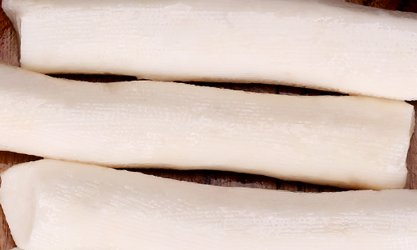
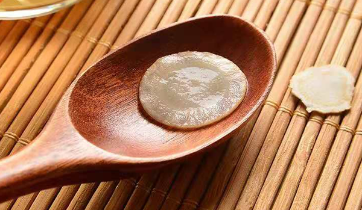
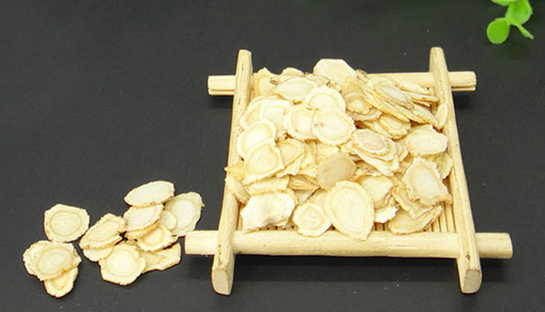
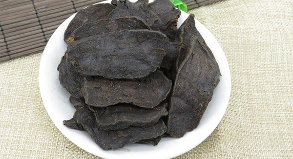
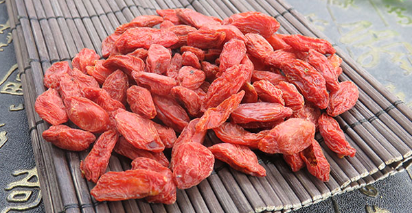

原文连接:https://www.daquan.com/post/11549.html
体内血糖过高会导致糖尿病，治疗糖尿病最重要的就是要控制血糖。中医中糖尿病称为消渴，形象的概括出糖尿病的多饮、多食、消耗大的病情。降血糖的中药有很多，可以直接当做中药饮片的有黄芪、山药、盘龙参、党参等。血糖高的患者一定要注意少吃糖分高的食物，必须要常年坚持忌口。
降血糖的药
1、黄芪

适应人群：适用于气虚导致消渴，血糖消耗不了的情况。
药用部位：黄芪的根，性味温、甘。
功效及食用方法：补气、固表、排脓、生肌，治疗因为气虚导致的消渴。食用方法可以将黄芪日常泡水饮用。
2、山药

适应人群：适用于虚热消渴的病人使用。
药用部位：山药的根茎部，性味甘平，可以治疗脾胃虚弱，代谢问题失常引起的血糖高。
功效及食用方法：补气，健脾，部位，治疗因为脾胃虚弱引起的糖分代谢失常，血糖偏高的情况，使用方法有直接蒸熟食用或者烹饪使用，山药是药食同源的药材之一。
3、盘龙参

适应人群：适用于阴虚导致的消渴的情况。
药用部位：绶草的根和草。盘龙参分布较广，有着补气滋阴的作用。
功效及食用方法：益气，养阴，清热解毒，降血糖，治疗病后虚弱，阴虚内热导致的消渴。食用方法是和其他药物配伍使用治疗疾病。
4、党参

适应人群：适用于血糖高，平时不注意饮食，熬夜引起的糖尿病患者。
药用部位：党参的根茎部，党参有着很好的滋补身体的功效，适合上班劳累加班的人群饮用。
功效及食用方法：补气，止渴，养血，生津，降血糖，治疗因为食用甜食过多导致内热型消渴。食用方法主要是平时当中药饮片泡茶饮用。
5、黄精

适应人群：适用于精血不足，阴虚引起的消渴病。
药用部位：干燥的根茎，性味甘平，走脾经、肺经、肾精。
功效及食用方法：补气滋阴，降血糖，治疗体内阴虚导致的内火旺盛引起的消渴病。平时可以当中药饮片使用，日常滋养身体。
6、枸杞子

适应人群：适用于糖尿病患者。
药用部位：成熟的果实，枸杞也是药食同源的药材之一，其行为甘甜，可以降血糖。
功效及食用方法：养阴滋肾，补肝明目，降血糖，治疗血糖高导致的糖尿病。食用方法主要有日常当做食材食用还有药物饮片。
结语：通过上文的介绍，相信大家都了解了关于降血糖的中药，希望大家在日常生活中能多用这6种中药泡茶饮用，滋补身体降血糖预防糖尿病。